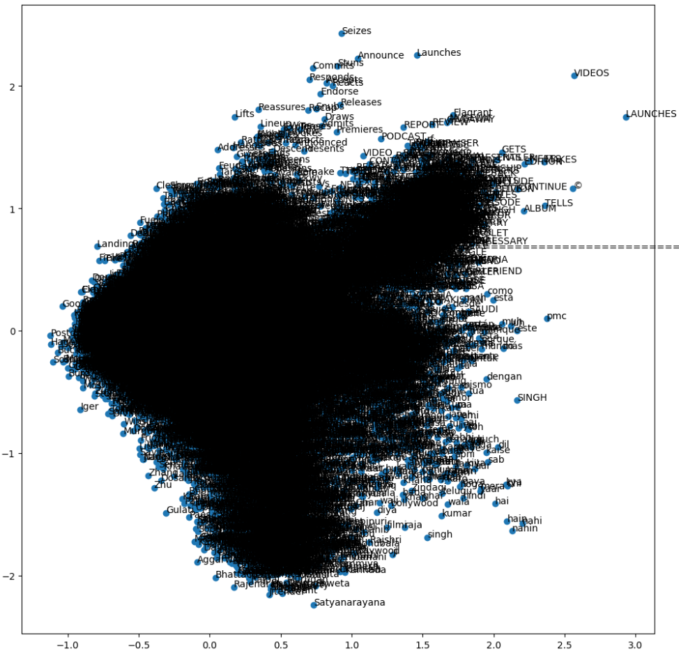
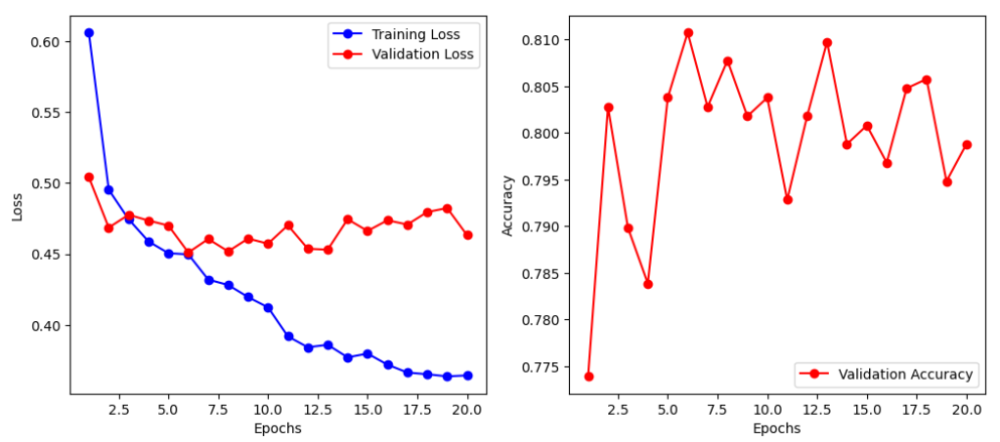

Introduction
YouTube is the world's largest video sharing platform available for creators and businesses to host their content. The trending page is notable for boosting viewership and putting videos in the spotlight for people to like, share, comment, and subscribe to the respective channels.
YouTube Trending Video Kaggle dataset updates top trending videos from 10 countries daily. Up to 200 trending videos per day are provided in the dataset. Features include video title, video id, channel title, publish time, tags, views, likes, dislikes, description, comment count, trending date, thumbnail link, comments disabled, ratings disabled, and video error or removal.
In this project, we aim to build models that can predict whether a video will become a trending video on YouTube. This will allow us to better understand the factors that YouTube considers when deciding which videos to feature on the trending page.
Problem Statement
Content creators on YouTube work to create a trending video in hopes of increasing exposure and earning revenue. YouTube claims that viral videos are based on view count, how fast the views are coming from, where they are coming from etc., but the inner workings of the YouTube Algorithm are known to be unclear and ambiguous.
In this project, we’ll use a one-class classification (OCC) approach to predict possible trending videos on YouTube. We’ll use trending videos’ statistics and the language as features to train different machine learning models, compare each model and create an ensemble method overall.
For this midterm report, we chose to implement two supervised models. A statistical model focused on numericals such as like count, video count, and more. A language model to analyze just the words and feelings expressed by a video creator from their channel and video descriptions.
Data Collection
We utilized existing Youtube trending video dataset from Kaggle and collected Youtube non-trending video data on our own with the Youtube API. Next, we conduct dataset cleaning and split the dataset for train and validation set. We show the dataset preparation procedures in below.
1. Download Youtube Trending Video Dataset from Kaggle
We downloaded the daily updating Youtube trending video dataset from Kaggle. This dataset contains all Youtube trending video statistics from 2020 till today across several countries and regions. In this project, we filter the trending data specifically from the US region
This is a slightly different dataset from our initial proposal. We chose this dataset as it is a much more recent and updated version and gives us more easier ways to pick non trending data without worrying about time series.
Data preprocessing:
For simplicity, we only use those trending data between 2022-12-15 and 2023-03-25. Then, check the status of the video (whether it was removed/copyrighted), remove unnecessary information, and then generate additional features using Youtube's API. Some features we collected include likes and dislikes per day.
2. Collect Youtube Non-Trending Video Data with Youtube API
Next, we used Yotube API v3 to collect non-trending videos in the same timeframe. We download random video statistics and make sure they are not overlapping with data we have in step 1 (therefore, they are not trending videos.) To avoid distribution change, we make sure we collect the video categories also shown in trending videos.
3. Add Number of Channel Subscribers and Split dataset
In the last step, we download number of channel subscriber and we convert discrete feature categoryId into binary features. Finally, we split the overall dataset (trending + non-trending) into train set and validation set in the ratio of 8:2.
Dataset Features
There are 4324 datapoints in train set and 1082 datapoints in validation set. There are a total of 2703 trending and 2703 non-trending video examples. There are 21 feature columns: video id, video title, publish time, channel id, channel Title, video category Id, cate_0, cate_1, cate_2, cate_3, cate_4, number of subscribers, trending date, video tags, views per day, likes per day, dislikes per day, comments per day, video thumbnail, rating, and description. Some of models will use only numerical features, and some of models will use textual features or image to train.
Most of the features are self-explanatory. 'title' and 'channel Title' are two different features because 'title' refers to the video title.
'cate_0' to 'cate_4' are binary features that indicate whether the video belongs to a category. 'views per day', 'likes per day', 'dislikes per day', 'comments per day' are the number of views, likes, dislikes, and comments per day that have been averaged. 'rating' is the ratio of likes to dislikes. 'description' is the video description. 'video thumbnail' is a link to the video thumbnail.
Methods
Our Dataset preparation and collection has been listed out in the previous section.
Model training: Each student will implement and train at least one ML model on our task. We’ll study and compare each model in depth, and at the end create an ensemble model by merging all models. In summary, we will try
a. One-class SVM [1] or One-class random forests [2]
b. One-class CNN trained on video thumbnails [3]
c. Textual one-class NN on video descriptions/ title [4]
d. One-class autoencoder [5]
e. Supervised binary classification with SVM or NN.
To create a benchmark and test how things go with our data, we came down to two model implementations that we will be using for our midterm report.
a. Supervised SVM model trained on numerical features.
This was completed using the sklearn.svm library. The algorithm used is called SVC, or supervised vector classifier, in which we try to find the best hyperplane to divide our data into groups, in our case, trending and non-trending data. The model was trained using 70 percent of the data and validated using the last 30 percent.
The data that was used for this training has already been cleaned as described in the Data collection procedure. The features to train this model we included were those with numerical data, including number of subs, the average views per day, average likes per day, average dislikes per day, average comments per day and rating.
b. Language model
In this model, our goal was to predict whether a YouTube video would become trending or not, focusing on the language features. We started by preprocessing the dataset and performing the following steps:
Checked for duplicate rows and null values. The data was already cleaned so there were no problems. Dropped all columns except for language-related ones (video title, channel title, description, tags), and combined them into a single 'lang' column. Normalized the subscriber count using a logarithmic transformation (log(1 + num_sub)). The real reason was due to subscriber count having a high range (32 to 239000000) and it was very heavily left-skewed. Handled missing language values by removing data points empty strings. While we had no null values at the beginning of the dataset. We had some language columns with no content at all. This was removed in preprocessing as they didn't provide any meaning to the video. For the final report, we would like to explore this further by making the word2vec model just pad the values so that it considers the videos with 0 natural language content.
After these preprocessing tasks, we further processed each video's language content:
Filtered out punctuations, stopwords, and words missing from our word2vec vocabulary (explained next). We chose to use spaCy to process our language. After processing and filtering out the language, we need to tokenize the data. All that means is splitting the sentence into a list of seperate words. The sentence would also first be lemmatized (only including the base version of a word). After generating tokens, we need to vectorize it so that a machine learning model can make sense out of our data. We then transformed the processed text into vectors using the Word2Vec model from the gensim library. We chose Word2Vec due to its ability to preserve the semantic meaning of words in the embeddings. Specifically, the google news 300 api was chosen. Giving us 300 dimensions for each language datapoint. Under a hidden layer, all the vectors were averaged to give us a final np array of 300 values. With the word embeddings in hand, we built two models:
A Support Vector Machine (SVM) from sklearn.
A simple Neural Network (NN) using PyTorch, with three fully connected layers and ReLU activation functions in the first two layers.1. The first layer (fc1) takes the input vector of size input_size and maps it to a 128-dimensional hidden representation. It applies a ReLU activation function to introduce non-linearity.
2. The second layer (fc2) takes the 128-dimensional representation and maps it to a 64-dimensional representation. It also applies a ReLU activation function.
3. The third layer (fc3) takes the 64-dimensional hidden representation and maps it to the output layer with 2 dimensions. The output layer does not have an activation function in this implementation, we use CrossEntropyLoss as the loss function in PyTorch. It combines a LogSoftmax layer with the negative log-likelihood loss.
Results & Discussion
Visualizations
We have created a few visualizations to help us understand our data better before training. There will be some after training as well.
Boxplots for likes, dislikes, comments, and views for both trending and non-trending data are shown below on a logarithmic scale.
The orange line shows the median and the diagram gives each quartile percentage of values and outliers. Trending data has a notably higher median for likes, dislikes, and comments compared to non-trending data.
Views are very similar between trending and non-trending data, but it is shown that trending videos have a minimum view count, and the first quartile of views is much smaller than the non trending videos boxplot.


We run 2D PCA on train dataset with all numerical features (excluding text features and thumbnails). According to the PCA, we cannot find a general linear classifier in 2d to classify a video is trending or not easily.
Moreover, we might potentially need to use ensemble models including language model using textual feature and CNN model using image to get better performance.

This is the numerical feature correlation table. We can see that views, likes and comments per day have positive relationship.

One of the highest datapoints picked out that contained the most content in terms of language and length of the number of words.
Most of the words may not even contribute to the prediction but will affect the prediction time. That is why we have preprocessing and vectorizing.

PCA was also ran on the 300-dimensional data reduced to 2 dimensions. These were all the unique words in the language column before preprocessing, but just all words that were valid within word2vec.
There is a sizable portion of the data centered in the middle and it is due to there being so many unique words.
Doing PCA on the language column did not reveal too many details about the dimensionality or variance of the data, but it is to be expected as it was reduced from 300 dimensions.

This is the distribution of the length of tokens for each video.
We can see most videos have about 100 words that are most meaningful after cutting out random noise.

Pre-processing
We found better places to put this section such as "Data collection" and "Methods" (for the language model) section . Please refer to those sections for the pre-processing details.
We plan to simply experiment the data with various models and training methods (such as OCC) as the data has already been preprocessed.
Results
SVM - Video Statistics
One of the supervised learning methods we were able to implement was our using the SVC algorithm. After fitting our model with 80 percent of our data and validating it with the last 20, we were able to find relatively good results.
We found the accuracy to be about 0.884. Precision was 0.95, indicating that we had very few false positives. Recall was 0.80.
While still a solid score, it indicated that we mislabeled quite a few non-trending as trending (false negatives). This is evident in the graphs that we have visualized below. Finally, F1, which indicates a harmonic mean between precision and recall, was measured to be 0.87.

On the left, you can see the predicted trending/non-trending classifications, while the graph on the right represents the actual classifications.
As you can see the predicted classification heavily underestimated the number of non-trending videos because there is far less pink.
This may indicate that the number of subscribers is perhaps a weaker predictor of likeliness to trend, especially in channels with lower sub counts.
A similar pattern, however, appears with all the other features tested as well as demonstrated below.


The graph below represents our data after a PCA reduction to the 2 most important features (graphed on the x and y axis).
Although we can’t see the actual features, it’s still a good indication to how the SVM performed.
On the left, you can see the predicted classifications, and on the right are the true classifications of the validation data.
Overall, the graphs match well, indicating that the SVM had good accuracy in the predictions.

SVM - Language
Confusion Matrix: 364 True positives, 129 False positives, 62 False Negatives, 449 True Negatives. We have somewhat of a high count of false positives.
This might suggest that the model may be too aggressive in predicting videos as trending.
Precision for non-trending and trending videos are 0.85 and 0.78 respectively. Recall for trending and non-trending videos are 0.74 and 0.88 respectively.
This suggests that the model is more precise in identifying non-trending videos.
Finally, the F1-score for non trending and trending are 0.79 and 0.82 respectively. It shows how model has a balanced view of both sides.
The accuracy was 0.81, which is not too bad considering the fact that we have a high count of false positives. We hope to improve this by approaching other methods of preprocessing.
The fact that word2vec produced similar results suggests that 1. the language model is capable and 2. the title and description of the video play somewhat of a significant factor in whether it becomes trending.
However, considering the fact that it has some trouble identifying negatives (false positives), we can infer that people are getting better and better at actually describing the content in a "trendy" fashion.
Neural Net - Language (PyTorch)
Our neural network model was trained on the language data. We used the same pre-processing steps as the SVM model. We used the same 80/20 split for training and validation. We used the same 300-dimensional word2vec embeddings.
The Neural Network ran for twenty epochs and calculated the loss and the accuracy of the validation data.
The loss was calculated using the cross entropy loss function.
The loss flattened out for the training data by the twentieth epoch where the loss is generally constant between the predicted output of the model and the actual for the data.
The accuracy for validation data was between 75.5 - 81% accurate in correctly identifying trending and non-trending data.
Overfitting starts occurring at around 7.5 epochs when the loss graph begins to deviate between training and validation loss.
As training loss improves and validation does not, it shows that the model is memorizing values from the training data and not adapting to take in new data. Hence why the accuracy graph begins to decrease after 6 to 7.5 epochs.

Miscellaneous - Contribution & Links

Datasets:
Trending YouTube Video Statistics
Non-trending YouTube Video Statistics Generation
Gantt chart and contribution (OLD - PROPOSAL):
https://gtvault-my.sharepoint.com/:x:/g/personal/scheekati6_gatech_edu/ERfH9NzTvuFGkYxok3T_RdEBF2gpDDYBTjMT9C2OdKL-Pw?e=m6DdKN&nav=MTVfezAwMDAwMDAwLTAwMDEtMDAwMC0wMDAwLTAwMDAwMDAwMDAwMH0
References
Dzhanova, Yelena. “Forget Law School, These Kids Want to Be a YouTube Star.” CNBC, CNBC, 3 Aug. 2019, https://www.cnbc.com/2019/08/02/forget-law-school-these-kids-want-to-be-a-youtube-star.html.
Azami, Zahid Nur Al. “YouTube Trending Videos Data Analysis.” Medium, CodeX, 28 Mar. 2021, https://medium.com/codex/youtube-trending-videos-data-analysis-a340b4a039f9.
“Trending on YouTube - YouTube Help.” Google, Google, https://support.google.com/youtube/answer/7239739?hl=en-IN.
Seliya, Naeem, et al. “A Literature Review on One-Class Classification and Its Potential Applications in Big Data - Journal of Big Data.” SpringerOpen, Springer International Publishing, 10 Sept. 2021, https://journalofbigdata.springeropen.com/articles/10.1186/s40537-021-00514-x%E2%80%8B.
Ruff, Lukas, et al. “Deep One-Class Classification.” PMLR, PMLR, 3 July 2018, https://proceedings.mlr.press/v80/ruff18a.html.
Khan, Shehroz S., and Michael G. Madden. “One-Class Classification: Taxonomy of Study and Review of Techniques: The Knowledge Engineering Review.” Cambridge Core, Cambridge University Press, 24 Jan. 2014, https://www.cambridge.org/core/journals/knowledge-engineering-review/article/oneclass-classification-taxonomy-of-study-and-review-of-techniques/EEDBC97CFD54B2B65BEB5FCD71593782.
[1] Schölkopf, Bernhard, et al. "Support vector method for novelty detection." Advances in neural information processing systems 12 (1999).
[2] Désir, Chesner, et al. "One class random forests." Pattern Recognition 46.12 (2013): 3490-3506.
[3] Ruff, Lukas, et al. "Deep one-class classification." International conference on machine learning. PMLR, 2018.
[4] Manevitz, Larry, and Malik Yousef. "One-class document classification via neural networks." Neurocomputing 70.7-9 (2007): 1466-1481.
[5] Fontenla‐Romero, Oscar, Beatriz Pérez‐Sánchez, and Bertha Guijarro‐Berdiñas. "DSVD‐autoencoder: a scalable distributed privacy‐preserving method for one‐class classification." International Journal of Intelligent Systems 36.1 (2021): 177-199.